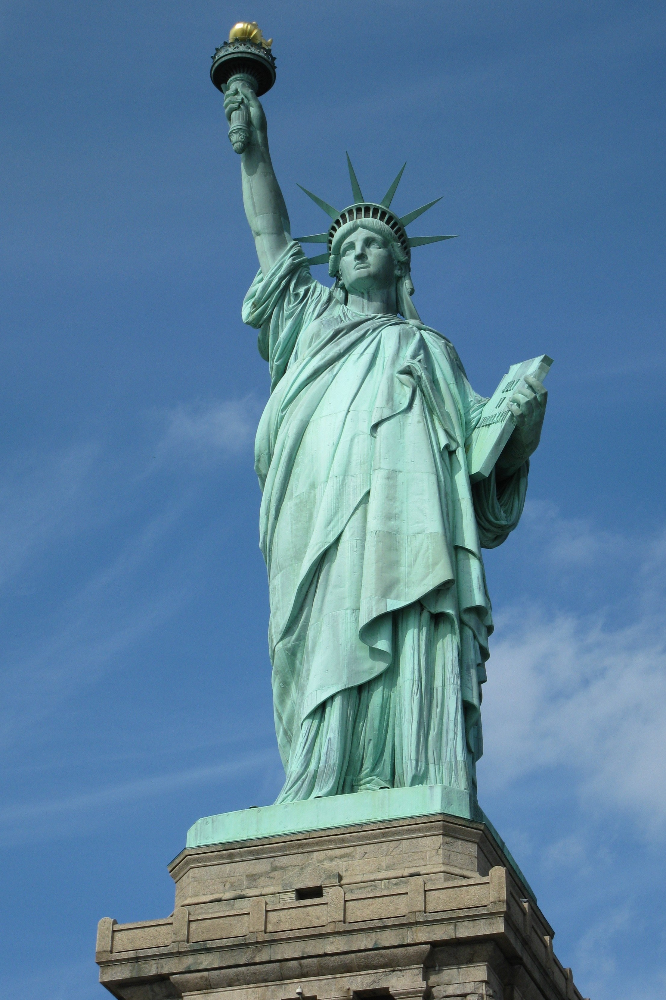

The Louvre Museum in Paris houses the most prestigious and most famous painting in the world, the Monalisa by Leonardo da Vinci.
Even though the painting is popular, so many people are always surprised by how small it is when they see it in real life — it is 77 cm x 53 cm to be exact.
Paris is undeniably a beautiful city but it also has darkness beneath its walls — a full city of darkness commonly known as the Paris underground city. This city is called “The Catacombs”.
Even though today the Catacombs are one of the places to visit in Paris to learn more about the city’s history, it’s still a dark place that holds over 6 million remains of Parisians. You can learn more about it by reading these Paris catacombs facts.
Paris is segmented into 20 different arrondissements which can also be referred to as districts.
One of the nicknames for Paris is the City of Light! I am sure almost everyone knows this as one of the facts in Paris. But what most people don’t know is how it assumed this nickname.